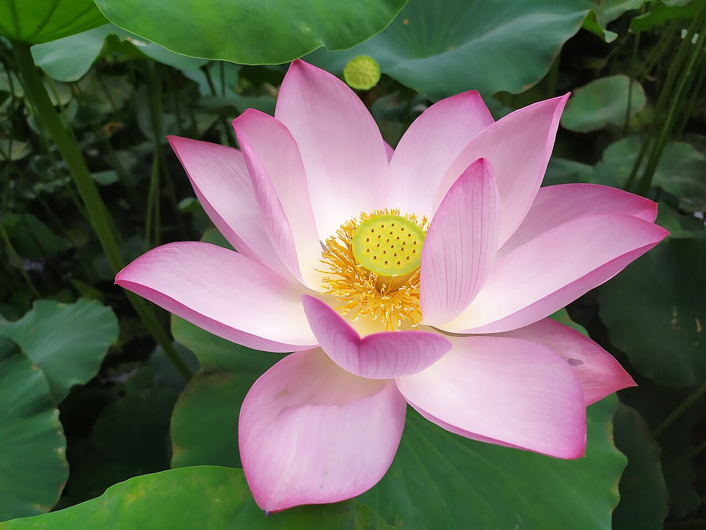

Mission
Our mission is to support the evolution of human values, consciousness and capacities by strengthening global peace awareness and offering fun platforms for practicing peace together through art, culture, films, movement, technology, education and rewarding service to the greater good.
Strategy
In our crisis-filled modern world beset by so much division, conflict, and war, how do we unify and mobilize enough people to create the conditions for Global Peace to emerge?
Tipping point theory states that a new behavior must be adopted by 15-25% of the overall group before it spreads across the entire population and brings systemic change. According to this calculation then, if we get ONE BILLION people to vote for peace and then practice peace, we have passed the crucial threshold for this uplifting behavior to spread to the 8 billion plus members of our human family.
It all starts with voting YES for The Declaration for Global Peace and downloading our free Peace Champion app and its catalytic catalog of wisdom and peace practices. This is how we raise the collective vibration of humankind for the benefit of all living beings, one Peace Champion at a time. To deepen the impact of this movement and ground it firmly in the world, a Peace Tree will be planted for every vote to help humankind make peace with Planet Earth.
- 01 1 Million verified votes for peace
- 02 10 Million verified votes for peace
- 03 100 Million verified votes for peace
- 04 One Billion the tipping point for 8 billion
Vision
Peace Champion is a modern cultural and technological movement to help human beings across our globe embody peace and make peace a daily practice. This 50-year project (2025-2075) envisions a unified, compassionate and thriving world in which peace is the operating principle for individuals, communities, organizations and nations.
This co-created world will be founded on kindness, harmony and order across the inner, interpersonal, international and environmental levels. Our ultimate goal is to help bring forth a sustainable human renaissance and a lasting golden age of nonviolence for humankind.
As a California 501c3 nonprofit organization founded in 2013, our seminal program is for ONE BILLION people from every country and culture across the earth to cast a verified vote YES in support of our Declaration for Global Peace. This historic Declaration fully integrates and supports The Muscles of Peace Global Resolution in Support of Infrastructures for Peace in Governments Worldwide, a global peace campaign widely endorsed by Global Citizen Signatories from 192 nations and peacebuilding experts, civil society organizations, youth, key political figures, community leaders, and academia.
A huge step forward for this movement and for humankind was achieved in 2023 when the UN's "A New Agenda for Peace" under "Preventing Conflict and Violence and Sustaining Peace," made the official recommendation to all member states to "develop national prevention strategies and strengthen national infrastructures for peace."
- 2013
- Founded as a California 501c3 nonprofit
- 2025 – 2075
- A 50-year project
- 192
- Nations with Global Citizen Signatories
Theory of Change
The most rewarding journey in all of life is traveling from separation to unity.
In unity, we all get to come home to peace.
-
1
Our best work on earth, therefore, is to use wisdom and peace practices to rise above the limited, separation-based body consciousness of the lower mind and ascend to the higher mind and the blissful awakening of unity consciousness.
-
2
When we arrive at the enlightened state where we experience that we are united with all that is on a deeper level than the physical senses can perceive, we have connected with the unifying source energy from which the material universe arises.
-
3
Tapped into this vast network of creation and vibrating at its universal frequency, we become more powerful and can have a bigger positive impact in the world.
-
4
When we use this gift to serve others in the compassionate Bodhisattva tradition, we are filled with the golden energy of selfless love, the strongest force for good in the universe, and are uplifted to higher states of consciousness along with those we serve.
-
5
Rising together as one, we elevate the collective vibration of humankind for the benefit of all living beings.
Values
-
Goodwill
Our organization is built upon kind gestures of peace and goodwill, like a Peace Dove carrying an olive branch to all members of our beloved global family.
-
Unity
We are united with all our neighbors on Planet Earth and stand for the idea that humanity is our home team, and even in great numbers, we are all one.
-
Energy
Just like the healing sun shining on all things equally, our organization endeavors to kindle warm, positive energy dedicated to service, in the heart of all human beings without exception.
-
Connection
We honor the wisdom of the past and connect it to the present and the future to illuminate the best path through our challenging world, like the phases of the moon on the darkest nights of Winter.
-
Interdependence
We understand the sacred power of humanity's interconnectivity and endeavor to take all human beings on the most rewarding user journey of all, from "me" to "we" and from "separation" to "unity."
-
Caretaking
We cherish humanity's role as sensitive caretakers of our beautiful planet for the sake of all living beings and embrace a regenerative way of life for the benefit of future generations.
-
Balance
We believe that walking each other home to peace in a balanced, compassionate manner is the wisest way to reach positive destinations and outcomes.
-
Trust
We trust that the cultivation of shared interests and common ground is the foundation of enduring peace, as exemplified by the healing communion of breaking bread.
Team
-
John Viscount
Board Chair, Chief Visionary Officer, Lead Content Creator
John is a peacebuilder, author, filmmaker, composer, and branding specialist. When John was in ninth grade, he started suffering from cluster migraine headaches - "one of the worst pains known to mankind" - according to the American Medical Association. Nicknamed "suicide headaches," they would come in large clusters of anywhere from 30 to 40 headaches at a time that hit all at once, one tortuous headache after the other.
There was no known medical cure and after enduring the severe pain for 15 years, John eventually dove into spiritual teachings for help. Eventually, he healed the headaches by applying the wise guidance these luminous paths provide. This inspired John to want to share this wisdom so others could benefit as he had.
To do this, he authored "Mind What Matters. A Pep Talk for Humanity" and "The Mind Supplement." He also creates global peace initiatives, peace-centered nonprofits, films, songs, wisdom campaigns, positive message apparel and peace branding campaigns. John also features this wisdom in the Thousand-Petaled Lotus Peace Training he created for our Peace Champion app.
John's peace entertainment film "Admissions" addresses the Middle East crisis and the power of forgiveness to heal interpersonal and international conflicts. The film has won over 30 international awards and has been translated into multiple languages and broadcast to 80 million homes worldwide. During the global tour of the film, John met Scotty Bruer and they launched the non-profit, PeaceNow.com. Together they built numerous platforms for strengthening the global Culture of Peace, including their ONE BILLION Signatures for Peace Campaign.
These platforms include a proposed United Nations Global Resolution called "The Muscles of Peace Global Resolution" for which John served as a lead drafter in collaboration with The Global Alliance for Ministries and Infrastructures for Peace. This international team of conflict resolution specialists included Peace Champion's brilliant Board Advisor, Iman Ibrahim. The resolution advocates for creating permanent governmental Infrastructures for Peace from the national to the local level and is widely endorsed by Global Citizen Signatories from 192 nations and peacebuilding experts, civil society organizations, youth, key political figures, community leaders, and academia.
John's new film "The Principle", addresses cyberbullying with teachings on kindness and unity and stars 4-time Grammy nominee Mickey Guyton. It premiered at The Martin Luther King Jr Center for Nonviolent Social Change's "Be Love Day" celebration and now begins its global journey. John also has a full slate of peace entertainment film and music projects in development.
-
Elizabeth Riley
Board Member, Chief Fundraiser
Elizabeth Riley is the rare amalgam of writer, producer, designer, filmmaker and futurist. A fierce advocate to regenerate our planet and our food systems, she is the founder, creative director and CEO of The Regenerative Culture, a media studio and creative agency. A seasoned producer with a proven track record Riley is an industry leader recognized for creating bold blue-chip content. In her varied career she has worked with some of the top creative talents across an international range of media and locations as a writer, producer, magazine editor, trusted collaborator and filmmaker. Riley has produced and directed feature films, documentaries, commercials and music videos. The aim of her work is to inspire passion, engage and motivate people to take action. An advocate for the regenerative movement, her goal is to awaken people to the possibilities of regeneration through our media, content and events.
-
Iman Ibrahim
Board Advisor
Iman Ibrahim is an adventurous soul with a passion for wisdom, beauty, peace, evolution and deep connections. She is an author, coach and trainer for life and leadership, and certified energy healer with significant expertise in conflict resolution, spirituality, and healing. Through her work at the Ombudsperson office at the University of Ottawa then as the former Executive Director of the Canadian Institute for Conflict Resolution (CICR), she contributed to the field of conflict resolution in Canada and abroad. Currently, Iman provides Leadership and Conflict Coaching and Training as well as Transformative Life Coaching, empowering individuals and organizations. Additionally, she offers Soulful Guidance for Life and Relationships through quantum healing and energy readings. Through these various capacities and experiences, she assisted and supported the transformation of thousands of people.
Iman has been deeply involved in leading projects of peacebuilding, multiculturalism, and dialogue. She has been co-Chair of the Canadian Peace Initiative advocating for Ministries of Peace and a member of the not-for-profit Global Alliance for Ministries and Infrastructures for Peace. She authored several papers, including her chapter "Creative Dialogue Between Muslim and Western Worlds Towards Reconciliation and Addressing Violent Extremism," published in the book "Transforming: Applying Spirituality, Emergent Creativity, and Reconciliation."
-
Fifer Garbesi
Executive Director, Board member
Fifer Garbesi is an award-winning emerging formats and technologies producer and has led teams in metaverse production for clients including Google, YouTube, Intel, and Meta. She has guided iconic brands and IP such as the NBA, Childish Gambino, The Pokémon Company, and Marvel in the adoption of new technologies. Garbesi's work has screened at Cannes, Tribeca, and The Nobel Peace Prize ceremony and was awarded a Cannes Lion. She is passionate about ethical technological development and environmental justice.
-
George Orbelian
Board Member
George is on the Board of the Buckminster Fuller Institute and his deepest passion in life is to help every child reach his or her potential and flower into the most beautiful adult they can become. His wide-ranging skills include new media, technology, engineering solutions, economics designing, building, writing, architecture, art, and business development.
-
Marilyn King
Board Advisor
Olympian Marilyn King's genius reaches far beyond sports. Through her personal experience, comprehensive research and non-stop study of human behavior, Marilyn has developed a unique but stunningly simple technology that has enabled thousands around the world to create "Olympian" results in their personal and professional lives. Marilyn's Olympian Thinking brings together ageless wisdom with exhaustive research to reveal the secrets of high achievers and extraordinary human accomplishment.
She has 30+ years experience applying "Olympian Thinking" to sustained high performance, leadership and teamwork with corporate clients including Apple Computer, Federal Reserve Bank, IKEA, Hewlett-Packard, Microsoft, Oracle, Starbucks, and Wells Fargo. She is also an internationally respected educator and program design consultant with a focus on the teaching of higher order thinking skills "to address global/systemic change challenges."
-
Aaron Ableman
Peace Champion Artivist-At-Large
Aaron Ableman is a United Nations award-winning multimedia storyteller, artist/rapper, and impact producer whose work bridges entertainment, education, ecology, and spirituality. As the author of three acclaimed books — his 4th is co-authored with Robert as a bestselling mythological children's series called Gaia's Game — Ableman continues to inspire revolutionary hope.
His debut, Pacha's Pajamas, became a groundbreaking edutainment brand featuring 75 collaborators, reaching over 4 million children with 22 awards, and inspiring an environmental-tech company using mushrooms to solve the plastic-pollution crisis. His second book, Welcome to Earth, chronicles his first year as a father through daily letters and creative practices for new parents. His latest, Rebels of Kindness, blends poetry, parables, and real-world heroism to champion the transformative power of care.
Ableman's projects span the globe — from planting a million trees in one day to producing humanitarian music campaigns with brands. As a producer for the #SaveSoil movement, he helped reach 4.4 billion people, engaging 70 world leaders and securing Vatican support.
He's collaborated with legends like U2, Mos Def, Michael Beckwith, Michael Franti and has appeared on MTV, HBO, TIME.com. With loving presence, philosophical wisdom and comedic sensibilities, Ableman continues to champion conscious planetary evolution. For more information, visit www.aaronableman.com.
-
Gavin Behrman
Film Producer
Gavin J. Behrman is a seasoned film and television producer and production manager, known for his work across major Hollywood productions. His career spans several high-profile projects, including contributions to films such as The Call of the Wild (2020) and hit TV series like Stranger Things (S5), The Mandalorian and Tom Clancy's Jack Ryan.
Behrman is recognized for managing highly complex productions with a focus on sustainability. On The Call of the Wild, he collaborated with environmental managers to implement green filming practices, including banning single-use plastics and utilizing solar-powered equipment-efforts aimed at significantly reducing the production's carbon footprint.
Beyond mainstream productions, Behrman has worked on blockbuster films and series such as Blade Runner 2049 and Erin Brockovich, as well as independent projects. His broad expertise enables him to navigate both large studio productions and intimate, socially-driven films, giving him a respected profile across the entertainment industry.
Behrman also partners closely with filmmaker John Viscount on socially conscious projects that promote peace and social awareness. One of their notable collaborations is the short film Admissions (2011), starring James Cromwell. The film explores conflict resolution through the lens of an encounter in the afterlife between an Israeli couple and a Palestinian man, focusing on forgiveness and reconciliation. Admissions has won multiple international awards and is featured in educational initiatives, including Stanford University's Forgiveness Project.
Their latest project, The Principle (2025), starring country music star Mickey Guyton addresses the theme of cyber bullying. The film premiered at The Martin Luther King Jr. Center for Nonviolent Social Change, with enthusiastic support from Dr. Bernice King, Martin Luther King Jr.'s daughter. This collaboration aligns with PeaceNow, a non-profit founded by Viscount, which aims to introduce peace-building films into school curriculum worldwide. Behrman's partnership with Viscount exemplifies his commitment to storytelling that fosters empathy, inspires meaningful dialogue, and drives positive social change.
-
Greg Sims
Music Composer & Producer
Greg is a songwriter, arranger, composer, orchestrator and producer of film and television music. He is currently co-writing songs and composing underscores for Warner Bros.
Greg's formal training began with piano lessons at age five, culminating seventeen years later with a degree in Studio Music & Jazz with Highest Honors from the University of Tennessee where he studied with renowned saxophonist and jazz educator Jerry Coker. Greg went on to build a successful career as a composer and orchestrator in Orlando, Florida, scoring and co-producing symphonic arrangements for the 101 Strings Orchestra before becoming Arranger-in-residence for the Orlando Philharmonic Orchestra. He also began composing music for various entertainment companies and theme parks, including Disney, Universal Studios, the PGA, and Kennedy Space Center.
Greg's first job in television was composing and producing music for the Oprah Winfrey Show, working with Emmy Award-winning Music Director Parker Lee Williams in the creation of Harpo Sounds, the show's custom music library. Greg's relationship with Williams continued for seven years until the show went off the air, and his music is still used for The Dr. Oz Show, Super Soul Sunday and other shows on OWN.
While Greg was working with Harpo, he began composing orchestral scores for film, including two animated features: Tugger, The Jeep Who Wanted To Fly (Jim Belushi, Carrot Top), and The Lion Of Judah (Ernest Borgnine, Michael Madsen, Scott Eastwood). Greg's epic orchestral score for Judah garnered him a record deal with MovieScore Media in Sweden and was selected as a Soundtrack Pick by Film Music Magazine.
Other notable film credits include iGOD, a documentary written and narrated by New York Times best-selling author of Conversations With God Neale Donald Walsch; the Marathi language drama Partu (2 nominations, Best Music); the documentary John G. Avildsen: King of the Underdogs (3 wins & 3 nominations, Best Feature Documentary); Stallone: Frank, That Is (5 wins, Best Feature Documentary); and 40 Years of Rocky: The Birth of a Classic (2 wins, Best Short Documentary).
-